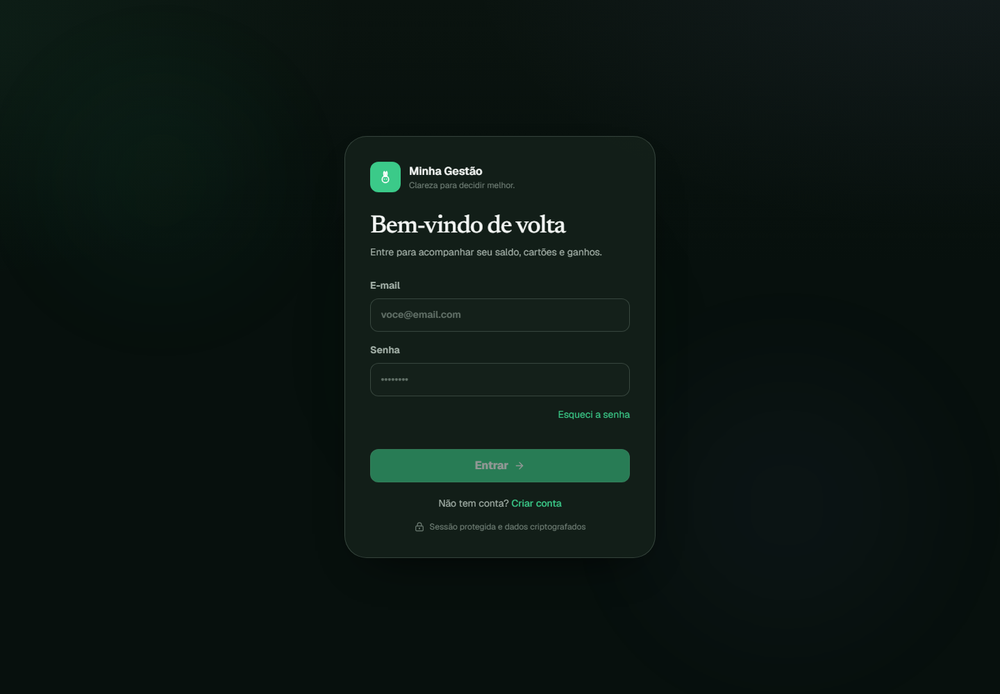
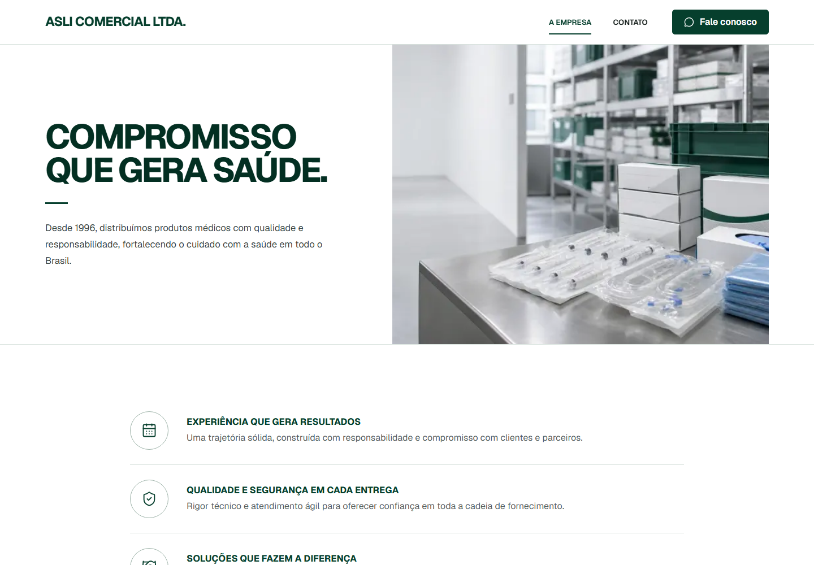

Desenvolvedor full stack e dados
Código que vira produto.
Construo aplicações web e soluções de dados, do requisito ao deploy, com testes e documentação.

TypeScript e Python
Aplicações em produção
Testes e documentação
Projetos que mostram a entrega completa
Produtos funcionais, decisões técnicas explicadas e resultados que podem ser avaliados.
Experiência web
ASLI Comercial
Presença digital institucional para uma distribuidora de produtos médicos. A interface prioriza confiança, acessibilidade, clareza da oferta e contato comercial. Projeto de cliente, com código privado.
- Next.js
- React
- TypeScript
- Motion

Produto full stack
Athenas
Rede social de estudos com tarefas em linguagem natural, Pomodoro, metas, grupos e flashcards com repetição espaçada (FSRS). Banco com RLS forçada, mais de 80 arquivos de teste (unidade, banco, E2E e acessibilidade), decisões registradas em ADRs e CI.
- Next.js
- TypeScript
- Supabase
- Vitest
- Playwright
Engenharia de dados
Despesas Federais
Pipeline ETL com dados reais do Portal da Transparência, armazenamento em DuckDB, testes automatizados e dashboard Streamlit. A análise cobre 2019 a 2025 e recalcula os insights quando novos períodos são carregados.
Código, contexto e responsabilidade pela entrega.
Sou formado em Análise e Desenvolvimento de Sistemas. Gosto de entender o problema, escolher uma arquitetura proporcional e deixar o projeto fácil de executar, testar e manter.
- Front-end
- TypeScript, React, Next.js, HTML e CSS
- Back-end e dados
- Python, APIs REST, PostgreSQL, Supabase, Pandas e DuckDB
- Qualidade
- Vitest, Playwright, pytest, validação de tipos e documentação técnica
- Entrega
- GitHub, Vercel, Streamlit, integração contínua e revisão responsiva
Disponível para oportunidades
Vamos conversar sobre o próximo desafio.
Busco oportunidades em desenvolvimento de software, full stack e dados.